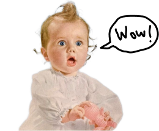

Who is Jo?
My mother chose my name because it was the shortest one she could find in our language. Interestingly, there are even shorter names than mine, according to the US Social Security database. Naturally, I became curious about those with just two letters and why parents chose such brief names.
Looking at the data collected since 1880, if you come from the US and have a two-letter name, chances are your name is Jo and that you were born in 1954. A record number of Jos were born that year—8,077, to be exact.
Which two-letter names are the most popular?
It's also likely that you were assigned female at birth. Given the current life expectancy of 76 years, the ratio of female Jos to male Jos is quite pronounced.
Many two-letter names, like Jo, started as abbreviations of longer names. But what happened to those original, longer versions? Is there a correlation between Jo's golden era and the rise or decline of its antecedents?